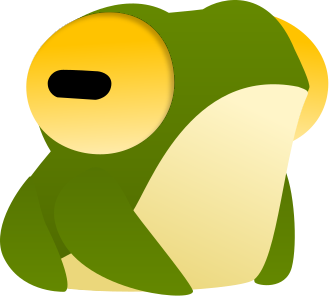
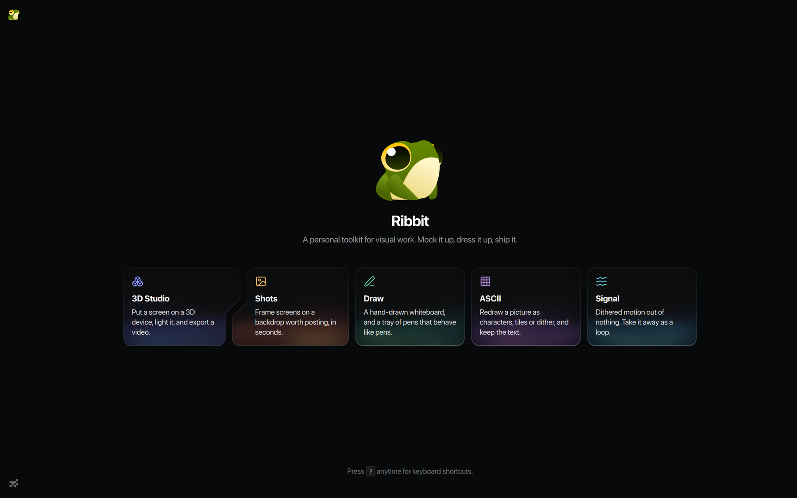
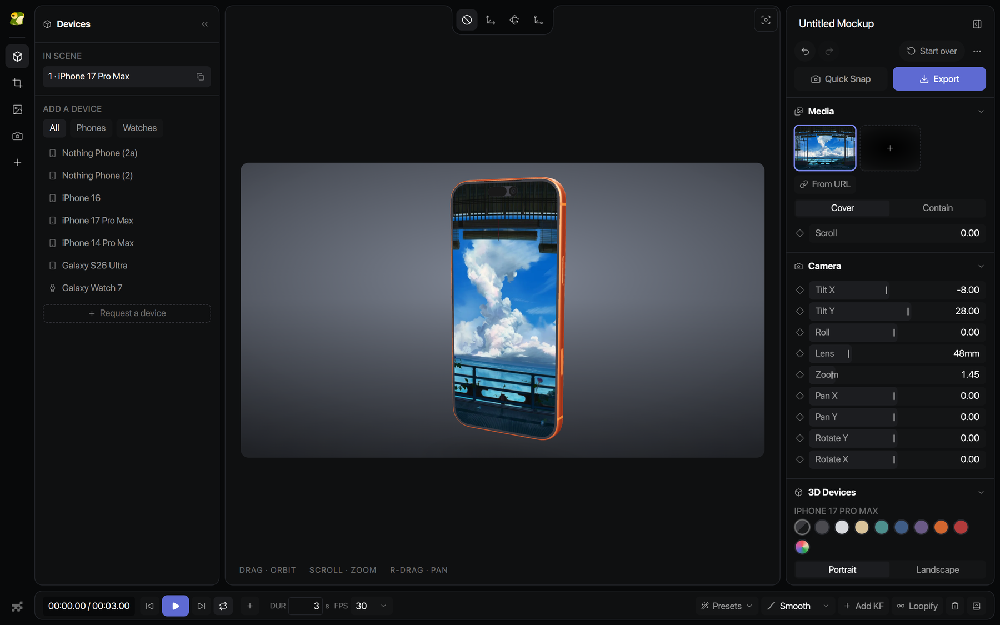
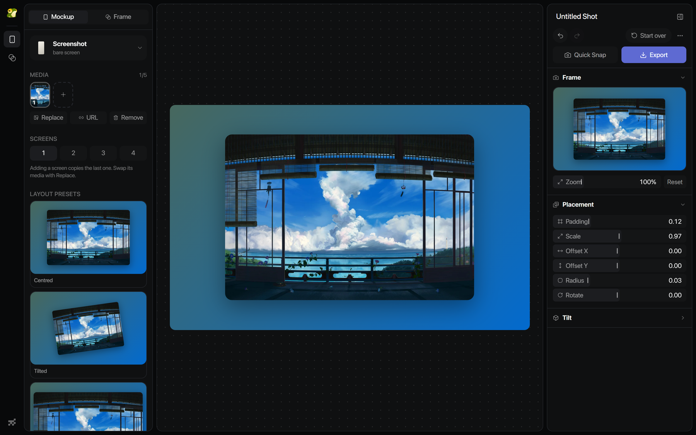
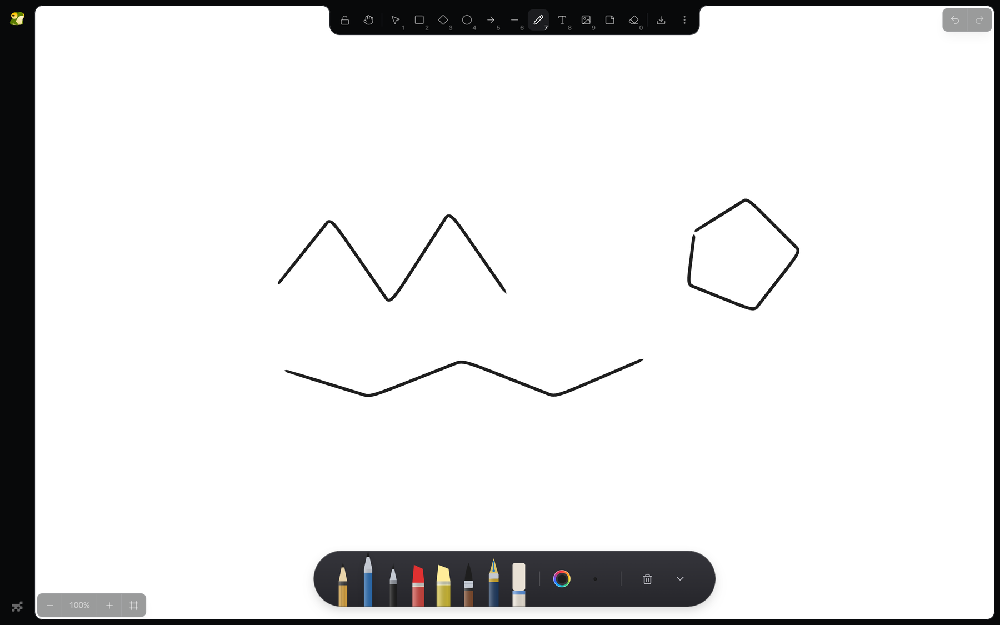
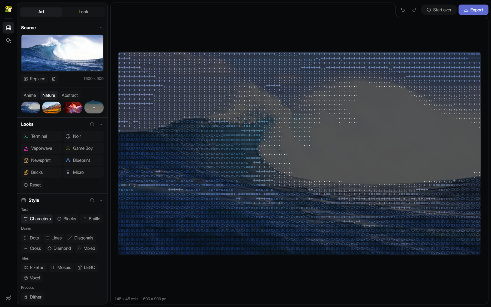
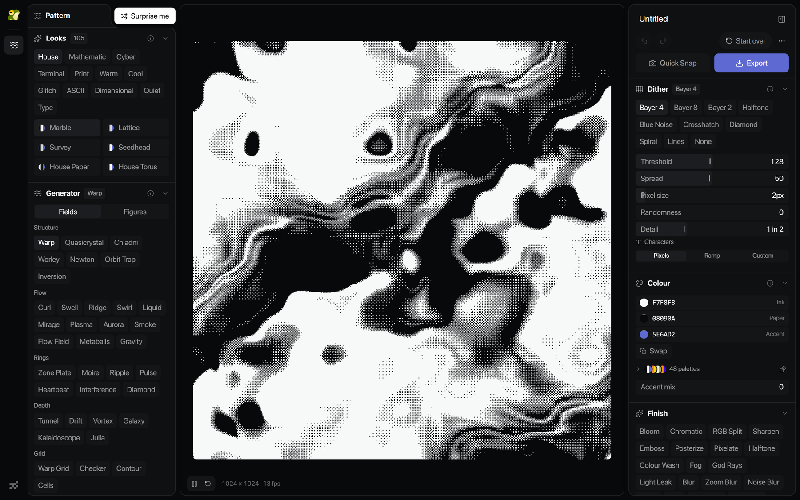

Ribbit
A personal toolkit for visual work.
Five tools

3D Studio
Shots
Draw
ASCII
Signal
Five tools. One shell.

3D Studio
Put a screen on a 3D device, light it, and export a video.
Camera: tilt, 48mm lens, zoom

Shots
Frame screens on a backdrop worth posting, in seconds.
Backdrop read from the image

Draw
A hand-drawn whiteboard, and a tray of pens that behave like pens.
Eight pens, drawn not iconified

ASCII
Redraw a picture as characters, tiles or dither, and keep the text.
145 x 45 cells of real text

Signal
Dithered motion out of nothing. Take it away as a loop.
1024 x 1024 at 13 fps
3D Studio/studio
Shots/shots
Draw/draw
ASCII/ascii
Signal/signal
Ribbit
Five tools. One frog.
/studio /shots /draw /ascii /signal